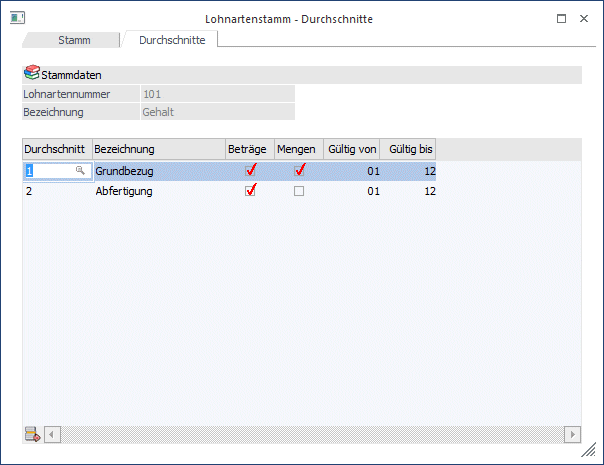

Im Fenster "Lohnarten - Durchschnitte", das über den Menüpunkt
1 Stammdaten
1 Lohnarten
1 Lohnartenstamm
oder Schnellaufruf
1 STRG + L
1 Register Durchschnitte
aufgerufen werden kann, können die Durchschnitte hinterlegt werden, die durch gerade aufgerufene Lohnart beschickt werden sollen.

Über die Lohnart wird gesteuert, in welchen Durchschnitt, der pro Arbeitnehmer gespeichert wird, der Bruttowert/die Stundenwerte gestellt werden soll.
Eingabefelder
Ø Durchschnitt
Hier wird der Durchschnitt eingetragen, der durch die Lohnart beschickt werden soll. Durch Drücken der F9-Taste kann nach allen angelegten Durchschnitten (die Anlage der Durchschnitte erfolgt im Menüpunkt Stammdaten/Lohnarten/Durchschnittestamm) gesucht werden. Pro Lohnart sind beliebig viele Durchschnitte zulässig.
Ø Bezeichnung
Die Bezeichnung des Durchschnittes wird aus dem Durchschnittestamm übernommen.
Ø Beträge
Ist diese Checkbox aktiv, wird der Bruttobezug dieser Lohnart in den gewählten Durchschnitt gerechnet.
Ø Mengen
Ist diese Checkbox aktiv, wird die Stundenanzahl der Lohnart in den gewählten Durchschnitt gerechnet.
Durch Anklicken des Entfernen-Buttons können eingetragene Durchschnitt gelöscht werden. Durch Drücken der F5-Taste werden alle Stammdaten der Lohnart gespeichert. Durch Drücken der ESC-Taste werden alle Änderungen verworfen und das Fenster wird geschlossen.